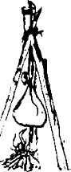

Eşkin yürüyüşlü kulanımla Batıya, en batıya doğru bir on beş gün daha yürüdüm. Bozkırda artık kar kalmadı. Yemyeşil otlu, renk renk çiçekli, akarsulu, ırmaklı, ağaçlı güzel bir bozkırın geniş göğsünde bir on beş gün daha gittim. Kişioğluyla dolmuş, canlanmış oynuyordu, kıpır kıpırdı bozkır. Bulgar argışları, Burtas atlıları, Oğuz yiğitleri, Başgırt avcıları, Mişer tuzakçıları, Slav kayıkçıları ve tek tük Peçenek çapulcuları gördüm. Her gören önümde yere kapanıyor, her gören “Maşiah... Maşiah” diye etrafımda dört dönüyor, her kişi karınca kararınca armağanlar veriyor, obalardan avullardan, anadan doğma atadan olma bir Köktürk tigini nasıl geçerse öyle bir görkem ile geçiyordum. Ak saçlı kancıklar, kel kafalı kocacıklar kulanımın üzengilerini öpüyor, dünya güzeli kızlar, sert bakışlı er yiğitler çizmelerimin tozunu dudakları ile temizliyor, ufacık çocuklar “Maşiah dede” diye bağırarak ardımdan koşuyordu.
Bağrı yanık analar sayrılanmış, ağlayan, yırtınan bebelerini kucağıma koyuyor. Kulanımın beşik gibi salınışından olsa gerek susuveriyorlar. Yoksulların yumuşacık saçlarını okşuyor, başlarını öpüp geri veriyorum! Bir Çuvaş köyünden geçerken de, keratanın biri, dalga mı geçti anlamadım, iki büklüm bir süklüm, elleriyle sağa sola tutuna tutuna, araştıra taraştıra, aksaya topallaya geldi beni buldu. Kulanımın sağ ön ayağını kaldırdı, nalsız ayaktan aldığı tozu iki gözüne sürdü. Sonra yitik anasını bulmuş buzağı gibi hoplaya zıplaya uzaklaşmaya, deli dana gibi koşmaya başladı. Bir yandan da avazı çıktığınca bağırıyordu:
“Görüyorum! Açıldı karanu gözlerimin perdesi,
Duysun işitsin yiğidi yigili uşağı kocası nenesi
Sönmüş ciğerime soluk, bağı çözülmüş dizime güç geldi
Gözünüz aydın ey il, tek Maşiah kendi geldi, özü geldi.”
Adamı dokuz güçlü er güç tuttular. Kollarından bastırıp yere yatırdılar. Yattığı yerden çipil ala gözlerinin içi gülüyordu. Bütün bir oba önümde yere kapandılar. Verdikleri yiyecekleri taşımak olası değil, hepsini tarlaya darı atar gibi saçtım attım. Her parçanın başında bir zorlu uğraş koptu. Attığım cevizleri kabuklarıyla yutuyor, etleri soğuk sıcak demeden üzerlerine yapışan taşlarla birlikte yiyorlardı. Tuhaf şey şu kişioğlu! Kendi yiyeceklerini ben istemeden kucağıma yığıyor, sonra taşın toprağın arasından almak ve yemek için birbirlerini kırıyorlardı. Köyden çıkarken sağ gözümün kuyruğu ile baktım, bizim eski aksak kör, yeni çevik yiğit, il ağası olmuş, beğlenmiş, el ayak öptürüyordu. Başımı iki yana sallaya sallaya kutanımı topukladım.
Günlerden bir gün de İdil Suyu denen denize, o ulu öküze ulaştım. Sanki Yenisey de benimle birlikte tüm bu bozkırı geçmiş, buraya gelmişti. Öyle ulu bir ırmak. Görkeminden gözlerime yaş saldırdı, içim kabardı, duygulandım, iki telli, şişçe göbekli kol kopuzumu indirdim, görelim ne söyledim:
“İdil Suyu aka durur
Kaya dibin kaka durur
Tengere Tigin baka durur
Ak göğüslü ince belli öz İdil
Var Hazar’a, saçlarını çöz İdil”
Yüreğim soğumadı, göğsüm inmedi. Bir daha söyledim:
“İdil Suyun yüzünde kayıklar
İçlerinde cebeli cevşenli hatırlar
Saçları kızıl, gözleri gök-yeşil
Ellerinde çomak, bellerinde satırlar...”
Bu İkincisi gerçekten soğuttu yüreğimi! Hatta bu erken yaz sıcağında buz etti. Kayıklardan biri yanaşmış, içindeki gök-yeşil gözlü hatırları kıyıya dökmüş, herifler Boğaç Han’ın kızıl çiçek tarlası görmüş boğası gibi dellenmiş, bana doğru seğirtiyorlar. Belki dururlar diye kızıl börkümü çıkarıp bekledim ama satırlarını, nacaklarını başlarının üstünde çevire çevire vardı, yettiler.
Kulanım acı acı anırdı. Diğer kayıklarda üst üste balık gibi yığılmış tutsaklar “Maşiah... Maşiah... Rav... babamız kurtar bizi albızların elinden” diye çığrıştılar. Kayıkların içinde yere kapandılar, kayıkların kıyıya en yakın olanlarından biri devrildi. Mızrak yemiş yaşlı bir yayın balığı gibi ters döndü. Su pek yüksek değildi ama elleri bağlı insanların davranıp suyun içinde ayağa kalkmaları epeyce güçtü. Tutsaklarını yitirmek istemeyen kızıl kafalılar başımda bir nöbetçi bırakarak, düşenleri kurtarmaya çalışan yoldaşlarına yardıma koştular. Bakmaktan başka yapacağım bir şey yoktu. Ben de başımda dikilip duran semiz, besili albızın gözlerinin içine baktım. Diğer kayıklardaki yoksullar, bazıları hiç anlamadığım dillerde, çıldırmış gibi bağırmayı sürdürdüler. Göğsü, bizim Orhon’daki mağaranın önündeki büyük körük gibi inip çıkan adam, onların söylediklerinin etkisiyle olsa gerek, karayele tutulmuş huş yaprağı gibi titredi. Önümde diz çöktü, kendine mendine gelemedi ve öylece kalakaldı.
Biz bu durumda iken diğer kayıklar da kıyıya yanaştı. İçindeki albız sürüsü kıyıya döküldü. Koşarak yanımıza ulaştılar. İçlerinden en cesuru önümde diz çöken yoldaşlarının omzuna dokundu. Adam içi kovuk boş bir ağaç gibi devrildi. Hepsi geriye sıçradılar. Sol işaret parmağımı en yakınımdakinin göz hizasına tuttum. Parmağımı hiç bükmeksizin, kolumu yavaş yavaş yere indirdim. Adam da birlikte yavaş yavaş yere çöktü. Hiç çekinmeden yanına gittim. Sağ elimi alnına koydum. Elimin altında tavşan gibi titriyor, ölüm sırasının kendisine gelmesini bekliyordu. Kamuyu yaratan Köktanrı’ya sığınıp yüzüne öyle bir şamar indirdim ki, olduğu yerde yarım bir yay çizdi. Yüzü uğursuz arkadaşlarına gelecek biçimde yere yığıldı. Sonra herifin omzuna dokundum ve elimle kalk işareti yaptım. Yagmacı-tutsak, hepsinin karmakarışık şaşkınlık çığlıkları bir kulağında, sillemin sesi diğer kulağında yankılandığı halde kalktı. Sol yanağı saçlarının rengine pek yaraşmış, al al olmuştu. Küçük bir çocuk gibi ağlaya ağlaya, burnunu sile sile arkadaşlarının arasına karıştı.
Bunlar ağızlarını açmış aval aval ayran beklerken, başka birine döndüm. Uruslar, evet, tutsakları böyle diyordu, deminki ölüm-yaşam sırası aynen gerçekleşirse içlerinden birinin daha gidici olduğunu anlamışlardı. Sırayı unutturup usumu karıştırmak istediklerinden olsa gerek, hep birden kendilerini yere fırlattılar. Dilleri döndügünce “Maşiah... Maşiah” diyorlardı. Ben de sırtları yere, ayaları göğe dönük iki elimi birden aniden yukarı kaldırarak “Kalkın! Hepinizin kuş canını bağışladım” dedim. Sonra yine işaretle tüm tutsakları çözmelerini söyledim. Çözdüler. “Cebeyi cevşeni bırakın” dedim. Bıraktılar. “Dağılın” dedim, sevinerek bozkırın yüzüne çil yavrusu gibi dağıldılar.
Sekiz kayığın tutsaklarından çıkan tek bir ses herhalde Köktanrı’nın kulaklarına kadar ulaştı: “Maşiah.” Tanrı kimseye tutsaklık bununu verip bunaltmasın! Özgürlük erdemini bulanlar da bunmasın! Hele kimse, buldum da buldumcuk olmasın! Tutsaklıktan kurtulanlar tam ters yöne çevirdikleri kayıklara geri bindiler. Burada tam güney yönüne doğru akan İdil Suyu’nun akıntısına kendilerini bıraktılar. Uruslardan kurtardıklarım, Hazar Kağanlığı’nın başkenti olan, İdil Suyu’nun üstünde kurulmuş İdil kentine gitmek istiyorlardı. Ben de önce onlarla gitmek istedim ama Bayındır Kohen’in yaz dolayısıyla kentten ayrıldığını ve büyük bir olasılıkla, daha batıya, Ten Suyu üstündeki Sarkel kentine gittiğini öğrendim. Sarkel’e gitmeye karar verdim. Kulanıma atladım. Gidebildiğim kadar kayıklarla aynı yöne gittim. Sonra suyun darlaştığı bir noktada onlar hızlandı, ben yine bozkırın ortasında yapayalnız kaldım.